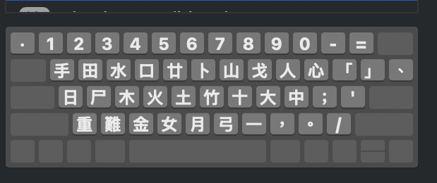

把 Windows 速成的打字節奏搬到 Mac，讓轉場少一點痛苦。
從 Windows 換成 Mac，最痛的往往不是系統，而是輸入法手感斷了。
Windows 速成用很順，Mac 內建節奏對不起來。
單碼還要開選字表，打字節奏斷掉。
想用 Shift＋數字選字，系統行為對不上。
字碼要「日月金木」，不要一排英文。
專為「Windows 速成 → Mac」打造，對齊你原本的肌肉記憶。
單碼不上選字表，空白鍵上屏。
Shift + 數字選、空白鍵翻頁。
顯示日月金木，而不是 abcd。
直式九格，展開後一次看更多字。